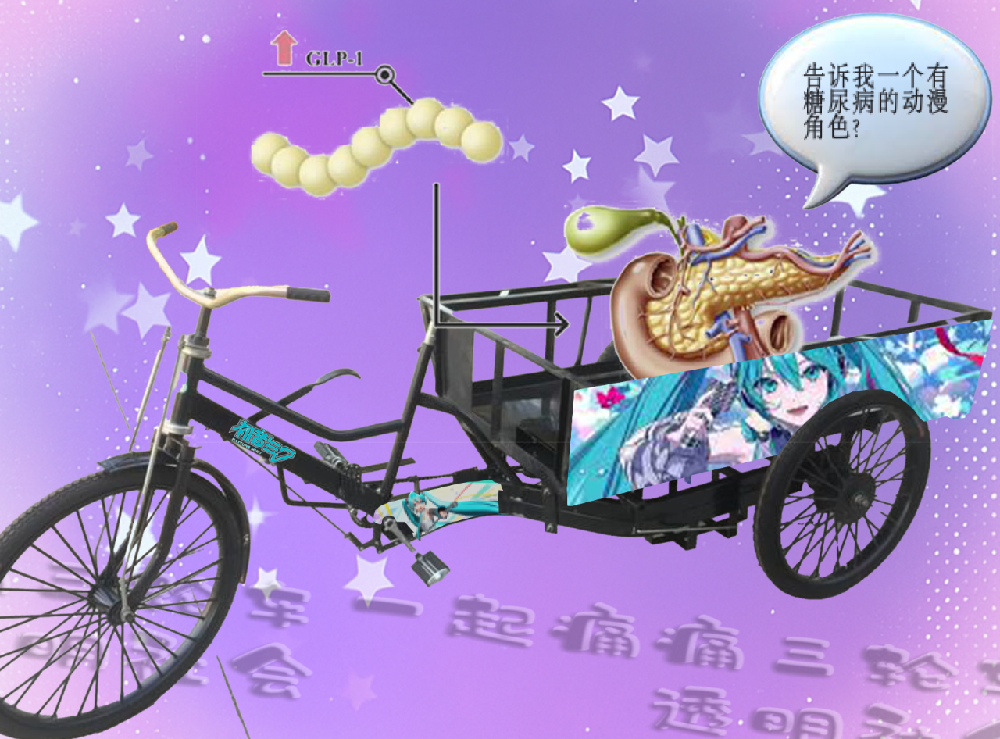

房东门口停着一辆废弃的三轮车，他说这是他做街道清洁和回收时用的。本次三轮车工作坊借用了日本御宅文化中“痛车”的概念，将尴尬之痛移植到被遗弃之痛和身体痛苦上。参与者将与房东合作翻新这辆废弃三轮车，并用流行文化贴纸装饰它。（后续见活动18。） The landlord has an abandoned tricycle parked outside his door, which he says he used when he was doing street cleaning and recycling. This tricycle workshop borrows the concept of "itasha" (anime-themed car) from Japanese otaku culture, transplanting the concept of pain from embarrassment to the pain of abandonment and physical suffering. Participants will collaborate with the landlord to refurbish the abandoned tricycle and decorate it with pop culture decals. (See Activity 18 for follow-up.)